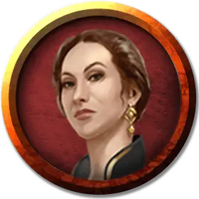

Яла Гролхунд
Yalah Gralhund
Средний Гуманоид (Человек тетирианка), нейтрально-злой, именной НИП

Класс Доспеха 15 (кираса)
Хиты 9 (2к8)
Скорость 30 футов
| мод | спас | ||
|---|---|---|---|
| СИЛ | 11 | +0 | +0 |
| ЛОВ | 12 | +1 | +1 |
| ТЕЛ | 11 | +0 | +0 |
| мод | спас | ||
|---|---|---|---|
| ИНТ | 12 | +1 | +1 |
| МДР | 16 | +3 | +3 |
| ХАР | 16 | +3 | +3 |
Навыки Обман +5, Проницательность +5, Убеждение +5
Чувства пассивное Восприятие 13
Языки Общий, Инфернальный
Опасность 1/8 (25 опыта)
Бонус мастерства +2
Действия
Рапира. Рукопашная атака оружием: +3 к попаданию, досягаемость 5 футов, одна цель. Попадание: Колющий урон 5 (1к8 + 1).
Реакции
Парирование. Яла добавляет 2 к КД против одной рукопашной атаки, которая должна попасть по ней. Для этого Яла должна видеть атакующего, и должна использовать рукопашное оружие.
Описание
Леди дома Гролхунд далеко не глупа. У неё острый ум и хватает мудрости отличать врагов от друзей. Муж преклоняется перед ней, а её дом имеет доступ к возможностям Чёрной Сети.
Яла следит за происходящим в городе, строго присматривает за детьми и использует своё положение и состояние семьи, чтобы выуживать секреты из уст благородных, магистров гильдий и простолюдинов. Её прежние попытки вступить в ряды Лордов в масках провалились, но она полагает, что это лишь вопрос времени. Она уверена, что подкуп, шантаж и угрозы позволят достичь желаемого, а затем планирует поменять правительство так, чтобы обеспечить дому Гролхунд процветание на многие поколения.
Яла пользуется услугами того же телохранителя, что и её муж, но Храббоз больше верен ей, чем ему. Жентарим, расквартированных на вилле Гролхундов, она использует как личную сеть шпионов, не подозревая, что наделе они служат Маншуну. По большей части она имеет дело с главным ассасином Жентарим Урстулом Флоксином, с которым обращается как с подчинённым.